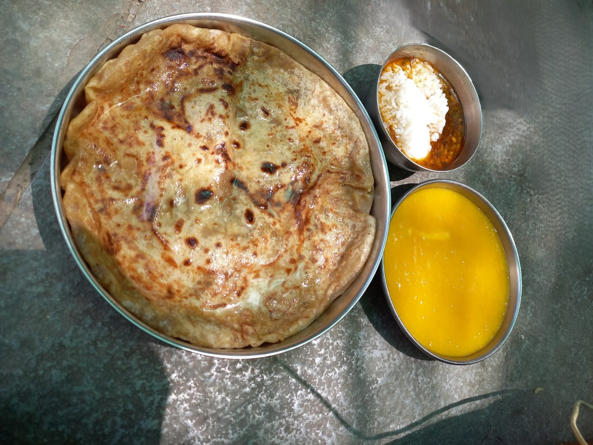

Relish the rich taste of Puran Poli
Puran Poli
Ingredients:
- 1 cup chana dal (split Bengal gram)
- 1 cup jaggery (grated)
- 1/2 tsp cardamom powder
- 2 cups whole wheat flour
- 2 tbsp oil
- Water as needed
- Ghee for roasting

Recipe:
- Pressure cook chana dal till soft, drain, and mash.
- Cook mashed dal with jaggery until thick. Add cardamom powder and let it cool.
- Knead wheat flour with oil and water into a soft dough. Rest for 30 minutes.
- Divide dough and puran (filling) into equal portions.
- Stuff dough with puran, roll gently, and cook on a hot tawa with ghee till golden brown.